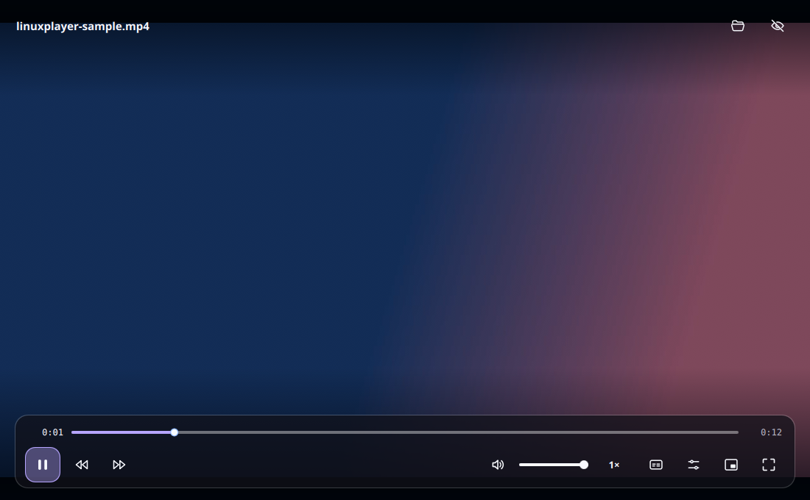
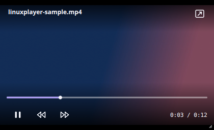

Focused playback
Seek, skip, change speed, loop, save a frame, or resume where you stopped. Controls hide as soon as playback starts.
Local videos in a calm, responsive player. Controls fade out when playback starts, and subtle feedback keeps every interaction clear.
ARM64 and install command →
Everyday controls stay close, then get out of the way when you press play.
Seek, skip, change speed, loop, save a frame, or resume where you stopped. Controls hide as soon as playback starts.
Keep the compact player over your other windows. Move and resize it while you work.
Switch audio and subtitle tracks or load an external subtitle file.
Open files from your file manager and make LinuxPlayer your default player from within the app. The prompt stays away once it is set.
Play, pause, skips, volume, and fullscreen respond with brief, smooth on-screen cues.
Use keyboard shortcuts, set a canvas ratio, and choose the player accent or your desktop’s accent color.
Switch to the compact player, place it over your work, and keep watching without giving the video the whole screen.
See the app screenshots ↗
Choose a canvas ratio, then use Fit or Fill to see the full frame or its crop. The source video is never stretched or changed.

Illustrative sample frame
Illustration of the player's canvas preview; it does not edit or export video. Feature guide ↗
Captured from LinuxPlayer running on a Linux desktop. Interface details may differ in the latest release.
Download one package for 64-bit x86 Linux, or use the terminal installer to select x86 or ARM64 automatically.
Latest release · 64-bit x86
curl -fsSLo /tmp/linuxplayer-install.sh \
https://github.com/teamkrope/linuxplayer/releases/latest/download/install.sh
bash /tmp/linuxplayer-install.shLinuxPlayer is licensed under GPL-3.0-or-later. Its interface uses Qt Quick/QML, and libmpv handles playback. Explore the code, report a bug, or contribute an improvement.
LinuxPlayer uses the system's libmpv and FFmpeg libraries. Format support depends on the codecs available on your distribution.
Yes. Choose "Make default video player" on the opening screen or in More options. The app updates supported file associations for your user account after you click.
No. Ratios show how a video fits or crops inside a canvas during playback. Your original file stays unchanged.
Email contact@teamkrope.com, see the support guide or ask in GitHub Discussions.